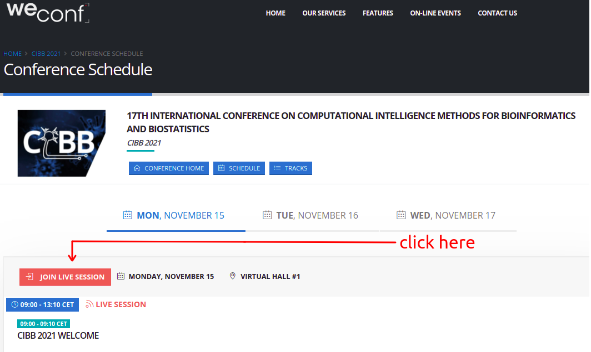

home
programme
call for papers
special sessions
keynote speakers
registration
organization
past editions
Scientific programme
Here you can read and download the PDF file of the scientific programme draft (version 7):
Please notice that some last-minute changes can still happen. Please notice that all the times are indicated in the CET (Italian) time zone. Each registered participant will have a slot of 20 minutes (15 minutes for slides plus 5 minutes for questions and answers) to present her/his short paper content.
Conference online participation
To participate in the the conference, participants , keynote speakers, invited speakers, and all attendees can visit the CIBB 2021 website on WeConf (
https://weconf.eu/cibb-2021/schedule
) and then click on the red button saying
JOIN LIVE SESSION
, that contains a Zoom link. Please also see the following screenshot:

The registration to WeConf is not requried to attend the conference (it will be needed after the conference to access the conference content).